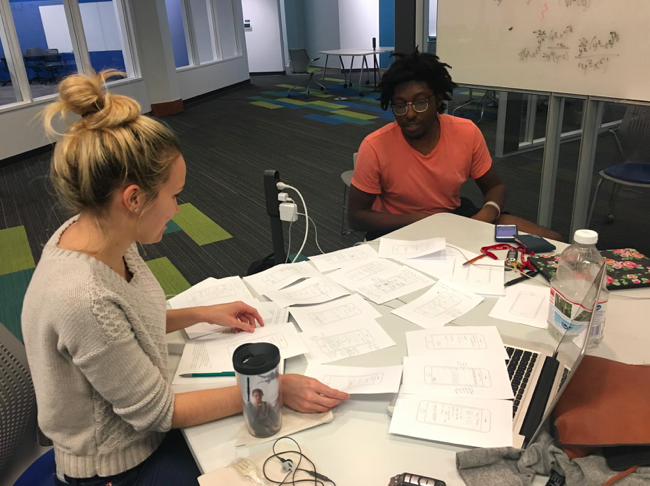
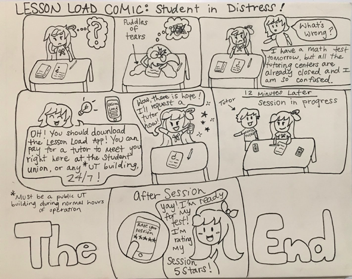
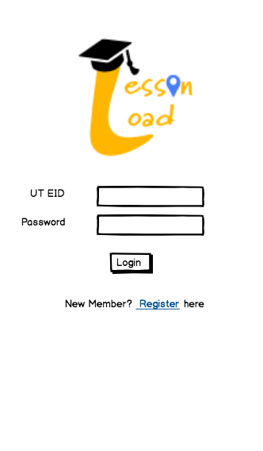
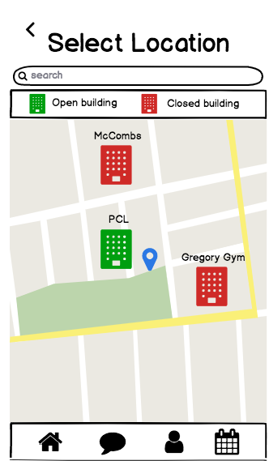
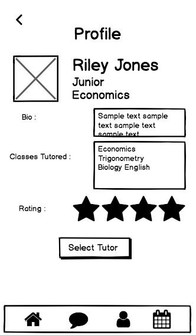
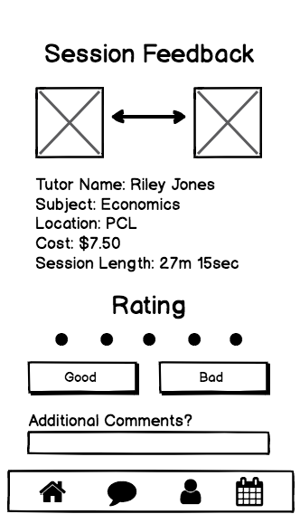

Lesson Load
A Tutoring Application
Project Overview
My Role: Researcher, DesignerMethods: Contextual Inquiry, Interviewing, Surveying
Tools: Qualtrics, Excel, Balsmiq
Platform: Mobile
Team Members: Ali Funnell, Akanksh K. Narayana
Project Duration: September 2017 - December 2017
Problem
The main source of tutoring on UT Austin's campus is conducted through the Sanger Learning Center. They provide tutoring sessions for a variety of core and upper level subjects for all undergraduate students on campus. However, a downside is the inconvenience of location and hours of the learning center, and they make it an inaccessible option for many students.
Task
Thus, the idea was born to create a tutoring service that would improve convenience and accessibility of tutoring for UT students. Students who need assistance would be able to conveniently find students who have previously taken the class and request help.
Solution
Based on the research conducted, we were able to prototype a mobile application to connect students to tutors in a manner similar to ride sharing applications. Students have the ability to request an available tutor based on availability and subject matter expertise, and tutors can declare their availability through the app.
Test Prototype Here!
Research: Contextual Inquiry & Surveying
In this phase, we began drafting questions about topics that were important to tutoring. Creating topics helped with
organizing the questions, and ensuring our interview was structured. To conduct interviews, opted for a more guerrilla
research tactic for a few reasons. A large benefit of this tactic is time, which we didn't have a lot of. Because this
method is quick, it allowed us to interview students without a waiting period. Another benefit is the ability to interview
students in their environment, instead of an artificial setting. Interviewing students in a study environment makes it easier for
them to reference the work they're doing, and obtain more authentic qualitative data.
Additionally, we crafted survey questions intended to get a more complete picture of users preferences. The survey questions
we created were heavily inspired by the interview questions to ensure our data was structured. Conveniently, one of my group mates
was a TA for an undergraduate chemistry course, so he had access to a large amount of undergraduate students. They were the primary
recipients of our survey, because we felt like our interview data didn't accurately represent the students who use the tutoring center.
Overall, through surveys and interviews, we were able to get data from a variety of UT students (tutors & tutees). We got valuable information
about student's study habits, their current process, and their pain points in regard to the current tutoring system.
Design
Sketching & Storyboards
Sketching was done before any digital design, and we made sure to do this together so we could be consistent with design elements and aesthetic decisions. The sketching also allowed for an easy transition from design thoughts to prototyping, which we did next. Storyboards created storyboards as well to highlight different scenarios in which the app would be used. The pictured scenario depicts a student who needs immediate help from a tutor (drawn by Ali Funnell).
 
Prototyping
To create mock ups of the application, we chose to use Balsamiq because of the cross-platform compatibility between Mac and PC, and the cloud functionality, which let all group members work on the prototype at the same time. Being able to prototype in unison helped us maintain consistency throughout the system.
After building out the screens, we chose to use InVision to implement interaction into our prototype. Adding the interaction helped us realize areas where we needed to go back to Balsamiq and add additional screens. We went through a few rounds of iteration during this process to ensure all the necessary screens were present in order to represent functionality.
   
Heuristic Evaluation & Cognitive Walkthrough
Both of these test were done because they were rapid and affordable. We submitted our app to another group for review and evaluation, which was completed in about 1.5 hours. All data from the evaluations can be found in the appendix of the full report. Overall, both of these method were useful for identifying usability issues in our low fidelity prototype. Cognitive walkthroughs were useful for identifying work flow related issues in the tutor on-boarding flow, and the heuristic evaluation helped identify singular design issues like missing progress bars and confusing icons.
Future Directions
Higher Fidelity Prototypes
Our first step is to move towards a higher fidelity prototype using Sketch or Adobe XD. We can also implement the design recommendations gathered from the cognitive walkthrough and heuristic evaluations. Additionally, Once interactions are fleshed out and finalized, we can move to creating a higher fidelity mock-up with UI capabilities with Sketch and Origami. This mock up would encompass the four workflows that we tested within Invision, and additional features like profile settings and communication option between tutor and tutee.
Missing Users?
A bias of our research is that the data primarily came from undergraduate student. However, there might be graduate students who want tutoring, or perhaps want to tutor. Additional interviews & surveys to include that user group would help us identify requirements or features that might be missing. Additionally, many of the students we collected data from were majoring in a STEM field, which is very different from social science and humanities. Attempting to gather data from those groups could help identify differences in study habits across majors and classes.
View Full Report Here!